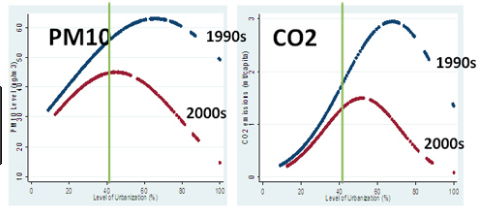
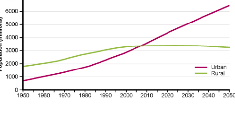
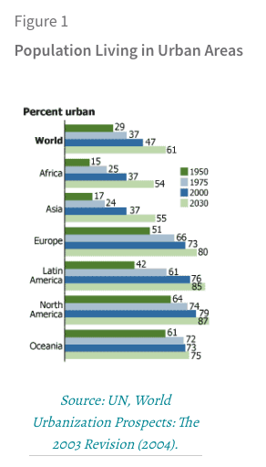

Here are some graphs. The first graph explains how urbanization has affected the enivronment. The second graph shows how people living in urban areas have overtaken people living in rural areas. And the third graph shows different continents and what percent of people from that continent live in urban areas.
  